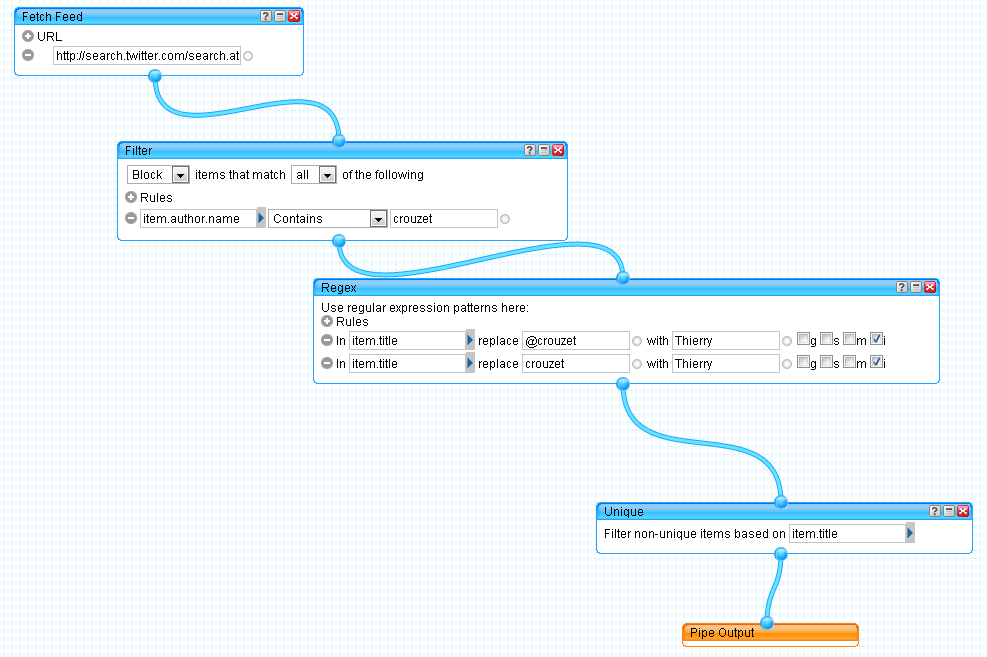

Déconnexion totale 100 %
C’est le dernier billet que je publie pour les neuf mois qui arrivent. Je me débranche après propulsion. Mon expérience de déconnexion commence maintenant. Vous me retrouverez en terrasse de café ou vous attendrez janvier 2012 et la publication chez Fayard du récit de cette aventure.
Qu’est-ce que cela implique ?
- Je coupe les commentaires sur le blog, pour ne pas crouler sous les spams et ne pas laisser les trolls se gaver allègrement.
- Je laisse active la détection des retweets.
- Je mets mon mail sur répondeur. Si vous m’écrivez, vous recevrez un message vous expliquant comment me contacter de manière ancestrale.
- Je bloque la connexion Internet sur mes ordinateurs et mon téléphone, mais elle restera à la portée de la main. Je serai comme un alcoolique qui à tout moment peut replonger.
- Pour m’informer, je ne disposerai plus que du bouche-à-oreille et des vieux médias. N’hésitez pas à m’écrire ou à me téléphoner pour me donner des nouvelles du vrai monde.
- Si vous vous ennuyez de moi, vous avez de quoi vous occuper pendant les mois qui arrivent. J’ai créé un ePub qui rassemble l’intégralité de mon blog. L’équivalent d'un gros tome de la Pléiade. J'ai publié en prime l'ébauche de ma brève histoire de l'informatique.
- Je modifie le look du blog pour mettre en avant mes livres et non pas les derniers billets.
- J’ai installé un serveur ThinkUp pour suivre a posteriori les conversations à mon sujet sur les réseaux sociaux. En toute probabilité il ne se passera rien, mais je n'arrive à débrancher franco.
- À partir d’un Search
Twitter, j’ai créé un
Yahoo Pipe que j’ai donné à manger à mon Google Reader en vue
d’archivage.
 - Ce fil RSS sera republié sur mon compte Facebook en automatique par twitterfeed.com. Je serai présent sur le Net sans y être. Mon identité numérique dépassera mon identité physique. Je vais devenir un fantôme.
- J'ai aussi configuré spotd.me pour qu’il retwitte automatiquement les messages qui me seront adressés sur Twitter. Vous pourrez ainsi parler à mes 7 000 followers. Je mets en quelque sorte mon compte à votre disposition. Ne le spammez pas.
Maintenant, je m’en vais vite m’installer au soleil sur la terrasse. J’ai des amis qui viennent fêter la déconnexion. Je vais essayer de ne pas trop penser à la bêtise que je suis en train de faire. La décyborisation sera-t-elle douloureuse ?
Vous aurez peut-être une chance de me croiser dans les mois qui arrivent à Tunis, à Genève, dans les Pyrénées, le Lot-et-Garonne ou en Bretagne, et qui sait à Paris. Et partout où on me proposera de venir. Je ne renie pas la connexion. Je vais la transposer du Net au physique, et ne comptez pas sur moi pour dire que je regagne la réalité, la réalité est tout autant sur le Net qu'en dehors. C'est ce paradoxe que je veux creuser.